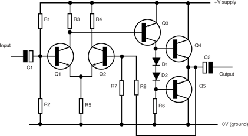

1.5.8. Применение биполярных транзисторов
Биполярные транзисторы используются в таких электронных приборах как:
- Усилители
- Генераторы
- Модуляторы
- Демодуляторы (детекторы)
- Инверторы (логические элементы)
- Микросхемы на транзисторной логике
1) Усилители.
Усилитель представляет собой в общем случае последовательность каскадов усиления (бывают и однокаскадные усилители), соединённых между собой прямыми связями. В большинстве усилителей кроме прямых присутствуют и обратные связи (межкаскадные и внутрикаскадные). Отрицательные обратные связи позволяют улучшить стабильность работы усилителя и уменьшить частотные и нелинейные искажения сигнала. В некоторых случаях обратные связи включают термозависимые элементы (термисторы, позисторы) — для температурной стабилизации усилителя или частотнозависимые элементы — для выравнивания частотной характеристики. Каскад усиления — ступень усилителя, содержащая один или несколько усилительных элементов, цепи нагрузки и связи с предыдущими или последующими ступенями. В качестве усилительных элементов обычно используются электронные лампы или транзисторы.
2) Генераторы.
Генератор (от лат. generator — производитель) — устройство, аппарат или машина, вырабатывающая электрическую энергию или преобразующая один вид энергии в другой. Частный случай — электронные генераторы сигналов — устройства вырабатывающие сигнал с определёнными математическими свойствами (автогенератор, генератор синусоидальных колебаний, генератор импульсов, генератор шума и т. д.).
3) Модуляторы.
Модулятор (лат. modulator — соблюдающий ритм) — устройство, изменяющее параметры несущего сигнала в соответствии с изменениями передаваемого (информационного) сигнала. Этот процесс называют модуляцией, а передаваемый сигнал модулирующим. Модулятор является одной из составных частей передающих устройств радиосвязи, радио- и телевещания.
4) Демодуляторы.
Демодулятор — электронный узел устройств, отделяющий полезный (модулирующий) сигнал от несущей составляющей. Демодулятор (детектор) является обычно наиболее важным, сложным и ответственным модулем радиотехнического устройства. Важной функцией демодулятора цифрового сигнала является восстановление тактовой частоты передаваемого потока символов.
5) Инверторы.
Инвертор (лат. inverto — поворачивать, переворачивать) — элемент вычислительной машины, осуществляющий определённые преобразования сигнала. Различают два основных типа инверторов: аналоговые и цифровые.